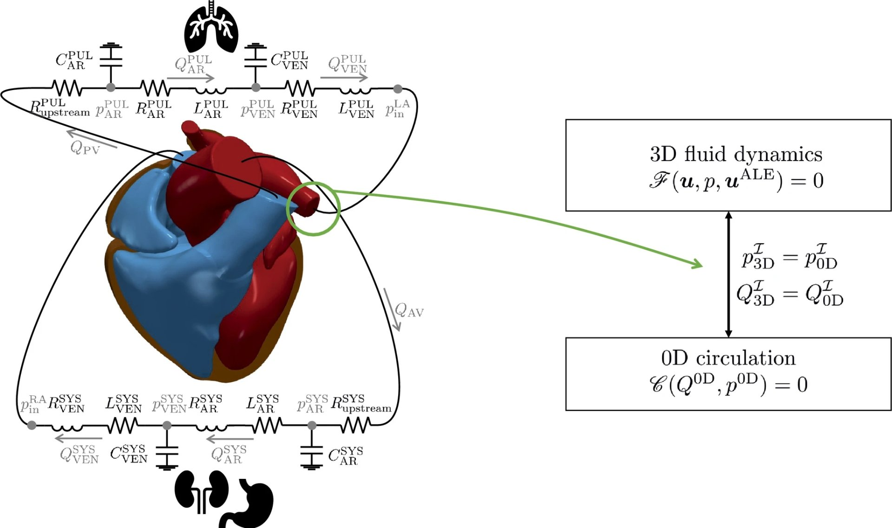
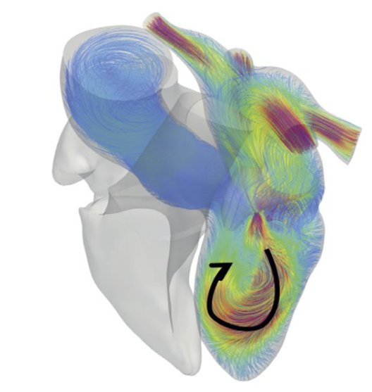
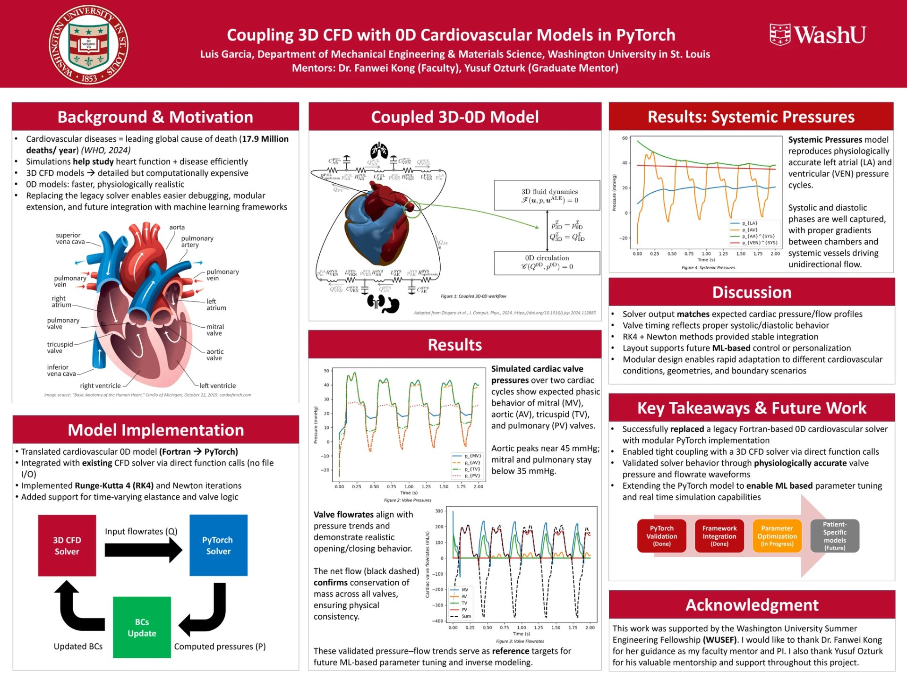

1000×
Speedup vs. traditional CFD solvers
3D–0D
Coupled cardiovascular model
4
Cardiac valves simulated (MV, AV, TV, PV)
Python / PyTorchPhysics-Informed Neural Networks
CFDRunge-Kutta 4
Fortran → PythonNumerical MethodsHemodynamics
Overview
Summer research at WashU’s Computational Mechanics & AI Lab under Dr. Fanwei Kong, mentored by Yusuf Ozturk (Graduate). The project focused on replacing a legacy Fortran-based cardiovascular solver with a modern, ML-extensible Python pipeline — and coupling it with a 3D CFD solver to simulate realistic cardiac hemodynamics.
The video above shows the hemodynamic velocity field through the heart ventricle — the kind of simulation that traditionally takes hours per run. The goal was to make this fast enough for real-time parameter studies and eventual patient-specific modeling.
3D–0D Coupled Model
The core architecture couples a 3D fluid dynamics solver (full Navier-Stokes, finite element) with a 0D cardiovascular circulation model — a lumped-parameter electrical analog of the heart and vasculature. The two solvers exchange pressure and flow data at each timestep through direct function calls, no file I/O.

Coupled 3D fluid dynamics + 0D cardiovascular circulation model — pressure/flow interface

Hemodynamic velocity streamlines through the cardiac chambers — CFD output
WUSEF Symposium Presentation
Findings were presented at the WashU Summer Engineering Fellowship (WUSEF) symposium. The poster covers the full pipeline: background motivation, coupled model architecture, implementation details, and validated results showing physiologically accurate valve pressure waveforms.
WUSEF 2025 Symposium

Coupling 3D CFD with 0D Cardiovascular Models in PyTorch · Luis Garcia · WashU Dept. of Mechanical Engineering
Technical Work
- Architected Physics-Informed Neural Networks (PINNs) in PyTorch encoding governing Navier-Stokes equations directly into the loss function — achieving 1000× reduction in simulation time vs. traditional 3D CFD solvers
- Built modular Python pipeline to translate legacy Fortran 0D cardiovascular solver — implementing RK4 integrators, Newton iterations, time-varying elastance and valve logic from scratch
- Coupled 0D circulation model with 3D CFD solver via direct function calls — enabling physiologically accurate left atrial and ventricular pressure cycle reproduction
- Validated cardiac valve pressure waveforms (MV, AV, TV, PV) — aortic peaks near 45 mmHg, mitral and pulmonary below 35 mmHg — against expected systolic/diastolic behavior
- Confirmed mass conservation across all valves; flowrates align with pressure trends showing realistic opening/closing behavior
Lessons Learned
Legacy code is documentation in disguise
The Fortran solver had no comments and no documentation. Reading it line by line to understand what each variable represented taught me more about cardiovascular modeling than any paper. Translating it forced a level of understanding that just using a modern library would have skipped entirely.
PINNs are powerful but not magic
The 1000× speedup is real but comes with tradeoffs — PINNs struggle near discontinuities like valve opening/closing events. Understanding where the physics-based constraints help vs. where they fight the optimizer was the hardest part of the project.
Validation is the whole job
A fast solver that gives wrong answers is worse than a slow solver. Every result had to be checked against physiological reference data and conservation laws before it meant anything. I learned to be skeptical of my own outputs by default.